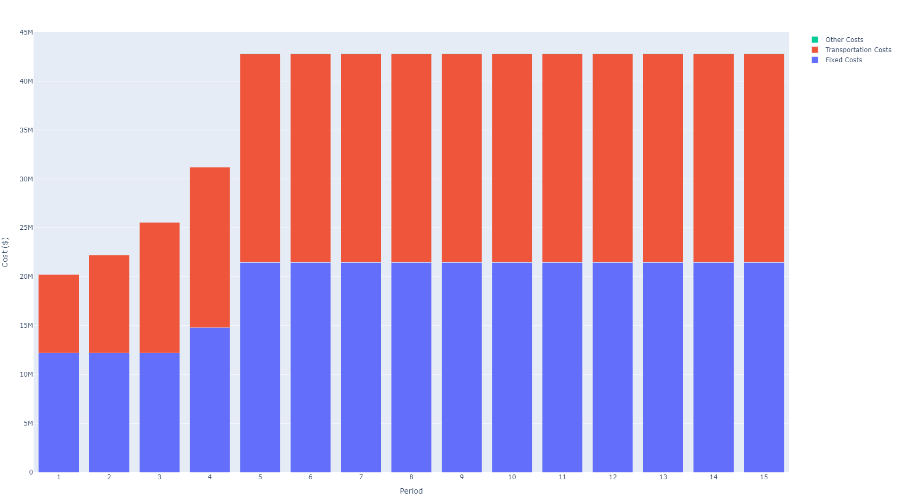
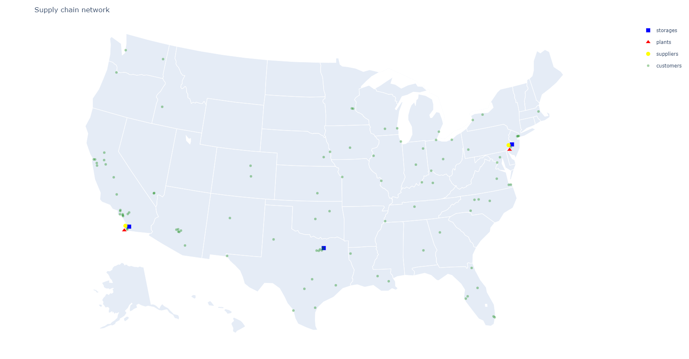

Multi-period Optimization
In this section we will see how to use SupplyChainOptimization for multi-period network optimization. We will consider a use case where demand is expected to grow over time. The setup is similar to the one in Locations Optimization with the difference that we are looking at 15 years of data instead of 1.
using CSV using DataFrames using Cbc using SupplyChainModeling using SupplyChainOptimization
nm = tempname() url = "https://raw.githubusercontent.com/plotly/datasets/master/2014uscities.csv" download(url, nm) us_cities = CSV.read(nm, DataFrame) rm(nm)
sort!(us_cities, [:pop], rev=true)
sc = SupplyChain(15)
product1 = Product("Product 1") product2 = Product("Product 2") addproduct!(sc, product1) addproduct!(sc, product2)
for r in eachrow(first(uscities, 10)) supplier = Supplier("Supplier r.name", Location(r.lat + 0.2, r.lon - 0.2, r.name)) addproduct!(supplier, product1; unitcost=1.0) addsupplier!(sc, supplier) end
for r in eachrow(first(uscities, 10)) plant = Plant("Plant r.name", Location(r.lat - 0.2, r.lon - 0.2, r.name); fixedcost= 6000000 + r.pop / 2, initialopened=false) addproduct!(plant, product2; billofmaterial=Dict{Product, Float64}(product1 => 1.0), unitcost=1.0) addplant!(sc, plant) end
for r in eachrow(first(uscities, 10)) storage = Storage("Storage r.name", Location(r.lat + 0.2, r.lon + 0.2, r.name); fixedcost= 2000000 + r.pop / 2, initialopened=false) addproduct!(storage, product2; initialinventory=0, unitholdingcost=0.01) addstorage!(sc, storage) end
for (i, r) in enumerate(eachrow(first(uscities, 100))) customer = Customer("customer i", Location(r.lat, r.lon, r.name)) addcustomer!(sc, customer) adddemand!(sc, customer, product2, [r.pop / (8000 * (6-min(i, 5))) for i in 1:15]) end
for s in sc.suppliers, p in sc.plants add_lane!(sc, Lane(s, p, haversine(s.location, p.location) / 750)) end
for p in sc.plants, s in sc.storages add_lane!(sc, Lane(p, s, haversine(p.location, s.location) / 750)) end
for c in sc.customers, s in sc.storages add_lane!(sc, Lane(s, c, haversine(s.location, c.location) / 250)) end
minimize_cost!(sc, Cbc.Optimizer)
The results show the network evolving in three phases:
- in the first phase, we open a plant and a storage location in Philadelphia to service the East Coast and a storage location in San Diego (supplied by the plant in Philadelphia) to service the West Coast.
- in the second phase, we open a third storage location in Dallas
- in the third phase, we open a plant in San Diego.
Each time a new facility is opened the fixed costs go up but the transportation costs are reduced compared to the configuration where the facility stays closed. The costs can be visualized as below.

The final network configuration is shown in the figure below.
